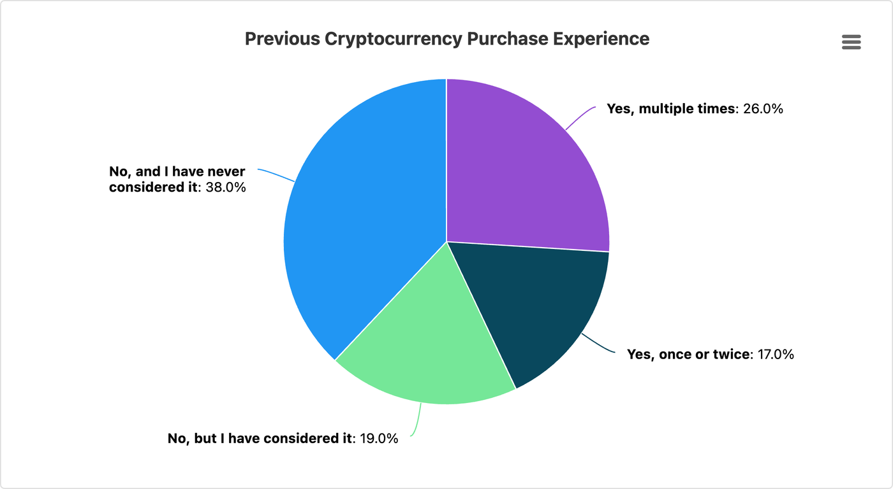
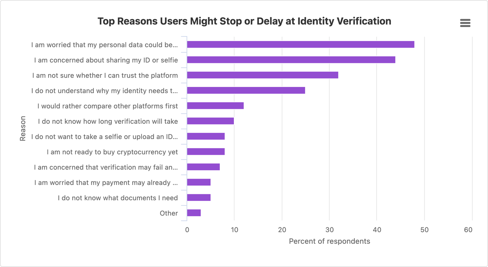
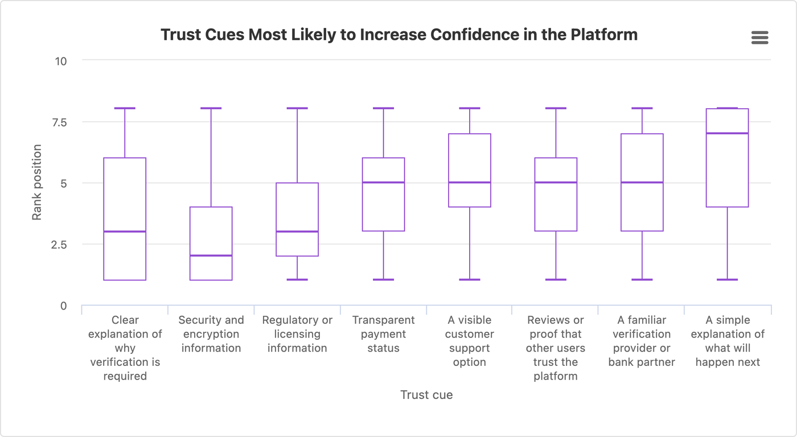
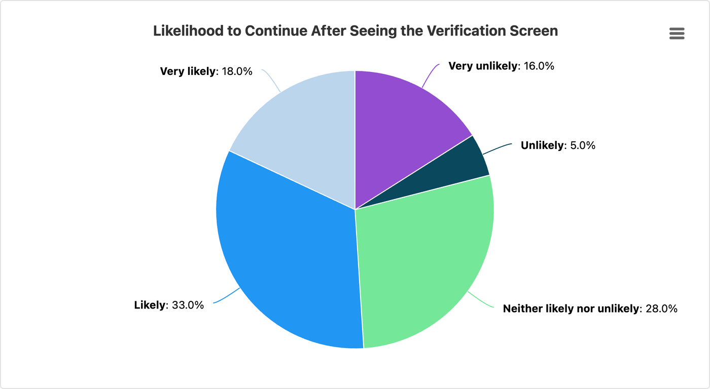
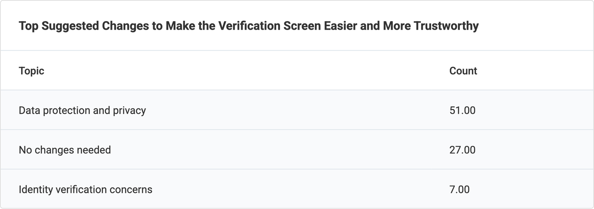

<title>Survey Results</title>
<meta name="robots" content="noindex, nofollow">
<meta name="viewport" content="width=device-width, initial-scale=1">
<link rel="preconnect" href="https://fonts.googleapis.com">
<link rel="preconnect" href="https://fonts.gstatic.com" crossorigin>
<link rel="stylesheet" href="https://fonts.googleapis.com/css2?family=IBM+Plex+Mono:wght@400;500&family=Inter:wght@400;500;600;700&display=swap">
<style>
:root{
  --ground:#ECEEE6; --surface:#F6F7F3; --surface-2:#FFFFFF; --ink:#101208;
  --ink-2:#474C40; --ink-3:#5F6458; --rule:#CFD1C8; --rule-2:#E0E2D9;
  --accent:#5C8A00; --accent-soft:#EEF7DA; --ochre:#5C8A00;
  --shadow:rgba(21,26,46,.10); --shadow-2:rgba(21,26,46,.16);
  --hl:rgba(168,129,47,.16); --hl-line:#A8812F;
}
@media (prefers-color-scheme:dark){
  :root:not([data-theme="light"]){
    --ground:#000000; --surface:#101112; --surface-2:#0C0D0E; --ink:#F5F7F0;
    --ink-2:#A8AC9F; --ink-3:#9A9E94; --rule:#232426; --rule-2:#1B1C1E;
    --accent:#A6F60A; --accent-soft:rgba(166,246,10,.13); --ochre:#A6F60A;
    --shadow:rgba(0,0,0,.4); --shadow-2:rgba(0,0,0,.55);
    --hl:rgba(201,163,78,.18); --hl-line:#C9A34E;
  }
}
*{box-sizing:border-box}
body{margin:0; background:var(--ground); color:var(--ink);
  font-family:"Inter",-apple-system,BlinkMacSystemFont,sans-serif;
  font-size:17px; line-height:1.62; -webkit-font-smoothing:antialiased}
.wrap{max-width:760px; margin:0 auto; padding:0 28px}
.mono{font-family:"IBM Plex Mono",ui-monospace,Menlo,monospace}
h1,h2,h3{text-wrap:balance; margin:0}
a{color:var(--accent); text-underline-offset:3px}
:focus-visible{outline:2px solid var(--accent); outline-offset:3px; border-radius:3px}

/* masthead */
.mast{border-bottom:1px solid var(--rule); padding:52px 0 38px}
.byline{margin:0 0 20px; font-size:15px; color:var(--ink-2)}
.byline b{color:var(--ink); font-weight:600}
.eyebrow{font-family:"IBM Plex Mono",monospace; font-size:13px; letter-spacing:.07em;
  text-transform:uppercase; color:var(--ink-2); margin:0 0 18px}
.mast h1{font-weight:700;
  font-size:clamp(2.1rem,5.4vw,2.9rem); line-height:1.08; letter-spacing:-.02em; max-width:22ch}
.mast h1 em{font-style:normal; color:var(--accent)}
.mast .lead{margin:18px 0 0; max-width:none; color:var(--ink-2); font-size:1.15rem}
.navlink{margin:24px 0 0; font-size:15px; color:var(--ink-2)}

/* the one idea */
.idea{border-left:2px solid var(--accent); background:var(--accent-soft);
  padding:18px 22px; border-radius:0 12px 12px 0; margin:36px 0 0; max-width:74ch}
.idea p{margin:0; color:var(--ink-2)}
.idea p.claim{font-size:1.2rem; line-height:1.4;
  color:var(--ink); margin-bottom:9px}

section{padding:64px 0}
.sec-head{margin-bottom:34px; max-width:62ch}
.sec-head h2{font-weight:700;
  font-size:clamp(1.7rem,3.2vw,2.3rem); line-height:1.12; letter-spacing:-.015em}
.sec-head p{margin:10px 0 0; color:var(--ink-2)}

/* two-up */
.duo{display:grid; grid-template-columns:repeat(2,minmax(300px,1fr)); gap:46px; max-width:860px}
.variant .vhead{display:flex; align-items:baseline; gap:10px; margin-bottom:14px}
.variant .vhead b{font-size:15px; font-weight:600; letter-spacing:-.01em}
.variant .vhead span{font-family:"IBM Plex Mono",monospace; font-size:10.5px;
  letter-spacing:.13em; text-transform:uppercase; color:var(--ink-3)}
.variant .vcap{margin:16px 2px 0; font-size:13.5px; color:var(--ink-3); line-height:1.55}
.variant .vcap b{color:var(--ink-2); font-weight:600}

/* ---------- brief layout ---------- */
.grid{display:block}
.doc{display:flex; flex-direction:column; gap:34px; max-width:none}
.block h3{font-weight:650; font-size:1.45rem;
  letter-spacing:-.01em; margin-bottom:13px; padding-bottom:9px; border-bottom:1px solid var(--rule);
  display:flex; align-items:baseline; justify-content:space-between; gap:14px}
.block h3 em{font-family:inherit; font-style:normal; font-size:14.5px;
  letter-spacing:0; text-transform:none; color:var(--ink-2); font-weight:400; white-space:nowrap}
.block p{margin:0 0 12px; color:var(--ink-2)}
.block p:last-child{margin-bottom:0}
.block b{color:var(--ink); font-weight:600}
.block ul{margin:0; padding:0; list-style:none; display:flex; flex-direction:column; gap:10px}
.block ul li{padding-left:20px; position:relative; color:var(--ink-2)}
.block ul li::before{content:""; position:absolute; left:2px; top:11px; width:7px; height:1px;
  background:var(--ochre)}
.callout{border-left:2px solid var(--accent); background:var(--accent-soft); padding:17px 20px;
  border-radius:0 12px 12px 0; display:flex; flex-direction:column; gap:9px; margin-bottom:14px}
.callout p{margin:0}
.callout p.claim{color:var(--ink); font-size:1.18rem; font-weight:600; letter-spacing:-.01em;
  line-height:1.45}

/* report figures */
.fig{margin:14px 0 6px; border:1px solid var(--rule); border-radius:12px; overflow:hidden;
  background:#fff}
.fig img{display:block; width:100%; height:auto}
.fig figcaption{padding:11px 15px; font-size:13px; line-height:1.5; color:var(--ink-2);
  background:var(--surface-2); border-top:1px solid var(--rule)}
.fig figcaption b{color:var(--ink)}

/* stat row */
.stats{display:grid; grid-template-columns:repeat(3,1fr); gap:0; border:1px solid var(--rule);
  border-radius:12px; overflow:hidden; margin:12px 0 4px; background:var(--surface-2)}
.stats > div{padding:16px 18px}
.stats > div + div{border-left:1px solid var(--rule-2)}
.stats b{display:block; font-size:30px; font-weight:700; letter-spacing:-.03em; color:var(--accent);
  line-height:1}
.stats span{display:block; font-size:13px; line-height:1.45; color:var(--ink-2); margin-top:7px}
@media (max-width:640px){ .stats{grid-template-columns:1fr} .stats > div + div{border-left:0; border-top:1px solid var(--rule-2)} }

/* quotes */
.quotes{display:flex; flex-direction:column; gap:9px; margin-top:10px}
.quotes q{font-size:14.5px; line-height:1.5; color:var(--ink-2); border-left:2px solid var(--accent);
  padding-left:12px; quotes:'\201C' '\201D'}

/* result bars */
.bars{display:flex; flex-direction:column; gap:9px; margin-top:10px}
.bar{display:grid; grid-template-columns:1fr 46px; gap:12px; align-items:center}
.bar .lab{font-size:14px; color:var(--ink-2); line-height:1.35}
.bar .lab b{color:var(--ink); font-weight:600}
.bar .val{font-family:"IBM Plex Mono",monospace; font-size:13px; color:var(--ink); text-align:right}
.bar .track{grid-column:1 / -1; height:7px; border-radius:4px; background:var(--rule-2); overflow:hidden}
.bar .fill{display:block; height:100%; border-radius:4px; background:var(--accent)}
.bar.dim .fill{background:var(--rule); opacity:.9}
.bar.dim .lab b{color:var(--ink-2)}

/* verdict chips */
.vchip{font-family:"IBM Plex Mono",monospace; font-size:10.5px; letter-spacing:.06em;
  text-transform:uppercase; border-radius:99px; padding:3px 9px; white-space:nowrap; display:inline-block}
.vchip.hit{background:var(--accent-soft); color:var(--accent)}
.vchip.miss{background:rgba(220,90,60,.16); color:#E8794F}
.vchip.part{background:rgba(200,170,60,.16); color:#D6B54A}

/* persona map */
.map{border:1px solid var(--rule); border-radius:11px; overflow:hidden; margin-top:10px;
  background:var(--surface-2)}
.mrow{display:grid; grid-template-columns:118px 1fr 1fr; border-top:1px solid var(--rule-2)}
.mrow:first-child{border-top:0}
.mrow > div{padding:10px 13px; font-size:14px; line-height:1.5; color:var(--ink-2)}
.mrow > div + div{border-left:1px solid var(--rule-2)}
.mrow.mhead > div{font-family:"IBM Plex Mono",monospace; font-size:12px; letter-spacing:.06em;
  text-transform:uppercase; color:var(--ink-3); background:var(--surface); padding:6px 11px}
.mrow b{color:var(--ink); font-weight:600; font-size:14px}
.mrow q{font-style:italic; quotes:'\201C' '\201D'}
.mrow.pri{background:var(--accent-soft)}
.mrow .pt{font-family:"IBM Plex Mono",monospace; font-size:12px; letter-spacing:.06em;
  text-transform:uppercase; color:var(--accent); display:block}

/* ai example */
.ai{display:grid; grid-template-columns:1fr 1fr; border:1px solid var(--rule); border-radius:12px;
  overflow:hidden; margin:6px 0 12px}
.ai > div{padding:15px 17px; display:flex; flex-direction:column; gap:8px}
.ai > div:first-child{border-right:1px solid var(--rule); background:var(--surface)}
.ai .tag{font-family:"IBM Plex Mono",monospace; font-size:12px; letter-spacing:.06em;
  text-transform:uppercase; color:var(--ink-3)}
.ai .tag.out{color:var(--accent)}
.ai q{font-size:16px; line-height:1.5; color:var(--ink);
  quotes:'\201C' '\201D'; display:block}
.ai small{font-size:13.5px; color:var(--ink-2); line-height:1.5}
.verdict{font-size:15.5px; color:var(--ink-2); padding-left:14px; border-left:2px solid var(--ochre)}

/* rail */
.rail{position:sticky; top:26px; display:flex; flex-direction:column; gap:20px}
.rail-card{border:1px solid var(--rule); border-radius:13px; padding:17px; background:var(--surface-2)}
.rail-card > p.label{margin:0 0 12px; font-family:inherit; font-size:14px; font-weight:600;
  letter-spacing:-.01em; text-transform:none; color:var(--ink)}
.metric{display:flex; flex-direction:column; gap:2px; padding:8px 0; border-top:1px solid var(--rule-2)}
.metric:first-of-type{border-top:0; padding-top:0}
.metric b{font-size:14.5px; font-weight:600; letter-spacing:-.005em}
.metric span{font-size:13.5px; color:var(--ink-2); line-height:1.5}
.metric.guard b{color:var(--ochre)}

.sidenav{position:fixed; top:140px; left:max(20px, calc(50% - 560px)); width:150px;
  display:none; flex-direction:column; gap:2px; z-index:40; opacity:0; transition:opacity .25s ease;
  pointer-events:none}
.sidenav.on{opacity:1; pointer-events:auto}
.sidenav a{font-size:13.5px; line-height:1.35; color:var(--ink-3); text-decoration:none;
  padding:6px 10px; border-left:2px solid var(--rule); border-radius:0 6px 6px 0}
.sidenav a:hover{color:var(--ink); background:var(--surface)}
.sidenav a.active{color:var(--accent); border-left-color:var(--accent); font-weight:600}
@media (min-width:1160px){ .sidenav{display:flex} }
footer{padding:38px 0 54px; color:var(--ink-2); font-size:13.5px; border-top:1px solid var(--rule);
  margin-top:26px; max-width:74ch}

@media (max-width:820px){
  .ai{grid-template-columns:1fr}
  .ai > div:first-child{border-right:0; border-bottom:1px solid var(--rule)}
}
@media (max-width:640px){ .wrap{padding:0 18px} section{padding:44px 0} }
@media print{
  :root, :root:not([data-theme="light"]), :root[data-theme="dark"]{
    --ground:#ffffff; --surface:#F4F5F0; --surface-2:#ffffff; --ink:#101208;
    --ink-2:#3C4136; --ink-3:#6A6F63; --rule:#C2C4BB; --rule-2:#DCDED4;
    --accent:#4A7000; --accent-soft:#EEF7DA; --ochre:#4A7000;
  }
  body{background:#fff; color:var(--ink-2); font-size:9.2px; line-height:1.35}
  .callout{background:var(--accent-soft); border-left-color:var(--accent)}
  .ai > div:first-child{background:var(--surface)}
  .ai q, .callout p.claim, .block b, .metric b{color:var(--ink)}
  *{-webkit-print-color-adjust:exact; print-color-adjust:exact}
  .wrap{max-width:none; padding:0}
  .mast{padding:0 0 6px; border-bottom:1px solid #bbb}
  .mast h1{font-size:15px; line-height:1.05; max-width:none}
  .mast .lead{font-size:9.2px; margin-top:5px; max-width:none}
  .eyebrow{font-size:7.2px; margin-bottom:5px}
  .navlink,.sidenav{display:none}
  section{padding:8px 0}
  .grid{display:block; column-count:2; column-gap:7mm; column-fill:auto}
  .doc{display:block; max-width:none; gap:0}
  .block{break-inside:auto; margin-bottom:5px}
  .block h3{break-after:avoid}
  .block li, .callout, .ai, .verdict, .rail-card, .mrow{break-inside:avoid}
  .map{break-inside:auto}
  .map{margin-top:5px}
  .mrow > div{padding:3px 6px; font-size:8.4px; line-height:1.28}
  .mrow b{font-size:8.4px}
  .mrow.mhead > div{padding:3px 6px; font-size:6.6px}
  .mrow .pt{font-size:6px}
  .mrow{grid-template-columns:82px 1fr 1fr}
  .block h3{font-size:10px; margin-bottom:4px; padding-bottom:3px}
  .block h3 em{font-size:7.2px}
  .block p{margin-bottom:4px}
  .block ul{gap:2.5px}
  .mrow > div{padding:3px 6px}
  .navlink,.sidenav{display:none}
  .mast .lead{font-size:9.2px}
  .callout p.claim{font-size:9.6px}
  .block h3{font-size:10px}
  .block h3 em{font-size:7.6px}
  .rail-card > p.label{font-size:8px}
  .ai .tag{font-size:7px}
  .inputs span{font-size:7.4px}
  .fstep{font-size:6.8px}
  .fnote{font-size:7.4px}
  .fnote b{font-size:6.2px}
  .funnel{padding:8px 9px 7px; margin:2px 0 6px}
  .fsteps,.fnotes{min-width:0}
  .block ul li{padding-left:11px}
  .block ul li::before{top:6px; width:5px}
  .callout{padding:6px 9px; gap:3px; margin-bottom:5px}
  .callout p.claim{font-size:9px; line-height:1.3}
  .ai{margin:3px 0 5px}
  .ai > div{padding:7px 9px; gap:4px}
  .ai q{font-size:9.4px; line-height:1.32}
  .ai small{font-size:8.2px}
  .verdict{font-size:9.4px; padding-left:8px}
  .rail{display:block; position:static; break-inside:avoid; gap:0}
  .rail-card{border:0; padding:0; background:none; margin-top:4px}
  .rail-card:nth-of-type(n+2){display:none}
  .rail-card > p.label{font-size:7.2px; margin-bottom:4px}
  .metric{padding:2px 0}
  .metric b{font-size:9.2px}
  .metric span{font-size:8.2px; line-height:1.3}
  footer{display:none}
  a{color:#000; text-decoration:none}
  @page{size:A4; margin:9mm}
}
</style>


<header class="mast">
  <div class="wrap">
    <p class="eyebrow">Design exercise &middot; Survey results</p>
    <p class="byline"><b>Po Chun Lin</b> &middot; Product Design</p>
    <h1>What 100 first-time buyers <em>said</em></h1>
    <p class="lead">A survey on the moment identity verification appears mid-purchase. Trust and data exposure &mdash; not effort &mdash; are what stop people, and that finding rewrote the screen.</p>
    <p class="navlink"><a href="index.html">&larr; Overview</a> &middot; <a href="brief.html">the brief</a></p>
  </div>
</header>

<nav class="sidenav" id="sidenav" aria-label="Sections">
  <a href="#s1">Who answered</a>
  <a href="#s2">Hesitation</a>
  <a href="#s3">What stops them</a>
  <a href="#s4">What earns trust</a>
  <a href="#s5">The screen</a>
  <a href="#s6">What it changed</a>
  <a href="#s7">Limits</a>
</nav>

<section>
  <div class="wrap">
    <div class="grid">
      <div class="doc">

        <div class="block" id="s1">
          <h3>Who answered <em>Method</em></h3>
          <p>Fielded through Pollfish in August 2026: <b>100 completes</b> across the USA, Australia and Singapore. Twenty questions covering the moment identity verification appears after a buyer has already chosen an amount and a payment method &mdash; trust, privacy, payment safety, effort, message framing, and a test of the screen itself.</p>
          <p>Respondents were deliberately not screened by crypto experience, because the people this screen has to convert are not all category natives.</p>
          <figure class="fig">
            
            <figcaption><b>43% had bought crypto before</b>; 19% had considered it and 38% never had. Half the sample was not at all or only slightly familiar with the category &mdash; newcomers slightly outnumber confident users.</figcaption>
          </figure>
          <p>Everyday financial tooling was near-universal &mdash; 92% use a credit or debit card, 84% a mobile banking app, 78% a digital wallet &mdash; but only 33% had used a crypto platform. People are comfortable with digital money and inexperienced with products that carry compliance checks, which is exactly why verification reads as a decision rather than a formality.</p>
        </div>

        <div class="block" id="s2">
          <h3>The problem is hesitation, not refusal <em>Q6</em></h3>
          <div class="stats">
            <div><b>34%</b><span>would continue with verification immediately</span></div>
            <div><b>42%</b><span>would go looking for a reason before continuing</span></div>
            <div><b>9%</b><span>would leave and find another platform</span></div>
          </div>
          <p style="margin-top:14px">Two-thirds were not ready to move straight away, but almost nobody rejects the ask outright. The commercial risk sits in the stall, not the exit &mdash; which means reassurance is worth as much as the mechanics of the flow.</p>
          <p>The split widens by market and by age. Singapore was the most explanation-led at 70% wanting to read more first; Australia carried the highest rejection risk with 30% leaving; the USA split evenly. 65% of 25&ndash;34s would proceed after seeing the screen, against 28.6% of 55&ndash;64s.</p>
        </div>

        <div class="block" id="s3">
          <h3>What would stop them <em>Q7 &middot; up to three, % of respondents</em></h3>
          <figure class="fig">
            
            <figcaption>Data misuse <b>48%</b> &middot; sharing an ID or selfie <b>44%</b> &middot; not trusting the platform <b>32%</b> &middot; not understanding why <b>25%</b>. Effort barely registers: how long <b>10%</b>, payment already charged <b>5%</b>, which documents <b>5%</b>.</figcaption>
          </figure>
          <p>The top four are all about exposure and legitimacy. Every operational worry &mdash; duration, documents, payment state &mdash; sits at the bottom.</p>
          <p><b>Intensity confirms it.</b> Asked how concerned they would be, 50% were extremely concerned about not knowing how their data would be stored, 43% about being charged before verification completes, and 39% about sharing a photo of a government ID. The process taking longer than expected was the least acute at 23%.</p>
          <p>The one behavioural question in the study says the same thing. <b>37% have abandoned an application because it asked them to verify their identity</b> &mdash; 8% on a crypto platform, 12% on a banking or investment app, 17% who no longer recall the service. Asked why, they did not describe broken flows:</p>
          <div class="quotes">
            <q>I felt like I was being scammed.</q>
            <q>It started to seem too personal and dicey.</q>
            <q>It began to feel sketchy.</q>
            <q>I didn't fully trust the platform.</q>
          </div>
          <p style="margin-top:12px">Coded, a feeling of sketchiness accounts for 16.5% of those comments, alongside trust, security and privacy. Exactly one respondent cited a technical failure.</p>
        </div>

        <div class="block" id="s4">
          <h3>What earns trust <em>Q9 &amp; Q13</em></h3>
          <p>Forced to pick one message, respondents chose security over everything &mdash; and the speed claim finished last by a distance.</p>
          <div class="bars">
            <div class="bar"><span class="lab"><b>&ldquo;Your ID is encrypted and used only to help keep your account secure.&rdquo;</b></span><span class="val">31%</span><span class="track"><i class="fill" style="width:62%"></i></span></div>
            <div class="bar"><span class="lab">&ldquo;Verify your identity to help protect your payment and crypto purchase.&rdquo;</span><span class="val">27%</span><span class="track"><i class="fill" style="width:54%"></i></span></div>
            <div class="bar"><span class="lab">&ldquo;Your payment will not be processed until your identity has been verified.&rdquo;</span><span class="val">20%</span><span class="track"><i class="fill" style="width:40%"></i></span></div>
            <div class="bar dim"><span class="lab">&ldquo;We need to verify your identity to meet regulatory requirements.&rdquo;</span><span class="val">16%</span><span class="track"><i class="fill" style="width:32%"></i></span></div>
            <div class="bar dim"><span class="lab">&ldquo;This verification usually takes around three minutes.&rdquo;</span><span class="val">6%</span><span class="track"><i class="fill" style="width:12%"></i></span></div>
          </div>
          <figure class="fig">
            
            <figcaption>Ranked trust cues, lower is stronger. <b>Security and encryption information leads at 3.1</b>; why verification is required and regulatory or licensing information tie at 3.8. <b>&ldquo;A simple explanation of what will happen next&rdquo; ranks last of eight at 5.7.</b></figcaption>
          </figure>
          <p>That last line is the uncomfortable one: it describes the path preview, which was the concept's signature idea. Read fairly, Q13 asked which cue increases <em>trust</em>, and predictability was never a trust device &mdash; it helps people finish, not believe. But the screen was weighted toward the wrong job.</p>
          <p><b>Information priority points the same way.</b> Rated extremely important: how personal information is protected 59%, why verification is required 46%, confirmation that payment is not processed yet 45%, documents needed 40%, what to do if verification fails 34%, and estimated time last at 19%.</p>
        </div>

        <div class="block" id="s5">
          <h3>The screen, tested <em>Q18&ndash;Q20</em></h3>
          <figure class="fig">
            
            <figcaption><b>51% likely or very likely to continue</b>, 28% neutral, 21% unlikely. Credible, not yet persuasive &mdash; and the neutral fifth is where the gain is.</figcaption>
          </figure>
          <figure class="fig">
            
            <figcaption>Asked for one change, <b>60% of coded suggestions were about data protection and privacy</b> (51 of 85). 31.8% said nothing needed changing.</figcaption>
          </figure>
          <p>The requests were specific and repeated: where the ID is stored, how long it is kept, who sees it, and proof the platform is real.</p>
          <div class="quotes">
            <q>The ID information will be deleted once it's been verified.</q>
            <q>More credentials visible.</q>
            <q>I would need to see which governmental agency it uses to verify.</q>
            <q>For them to explain how my data will be protected and how long it will be stored.</q>
          </div>
          <p style="margin-top:12px">Two criticisms landed on the craft rather than the content, and both recurred: the screen carries too much at once &mdash; <em>&ldquo;Too much information,&rdquo; &ldquo;a lot of information to process,&rdquo; &ldquo;the whole lot looks confusing&rdquo;</em> &mdash; and it is hard to read &mdash; <em>&ldquo;Bigger font,&rdquo; &ldquo;some of the text colour makes it difficult to read,&rdquo; &ldquo;use more professional colours and make it seem more secure.&rdquo;</em></p>
        </div>

        <div class="block" id="s6">
          <h3>What it changed <em>Version 2</em></h3>
          <p>Six changes, each traceable to a number above. The before and after are set side by side in the <a href="brief.html">brief</a>.</p>
          <ul>
            <li><b>Lead with data protection, not theft protection.</b> The encryption message won the forced choice; data handling is the most important information on the screen; 60% of requested changes were about privacy.</li>
            <li><b>Say what happens to the document.</b> Where it is stored, who sees it, when it is deleted &mdash; asked for unprompted, repeatedly.</li>
            <li><b>Put licensing back.</b> Regulatory information ties second among trust cues. Cutting it was wrong.</li>
            <li><b>Demote the time estimate.</b> Least persuasive message at 6%, least important information at 19%. The pill is gone.</li>
            <li><b>Shrink the path preview to one line.</b> Last of eight trust cues, but still the answer for the segment that wants rationale before acting. It earns a sentence, not a card.</li>
            <li><b>Reduce density and raise legibility.</b> Fewer blocks, larger type, visible credential marks.</li>
          </ul>
        </div>

        <div class="block" id="s7">
          <h3>What this cannot settle <em>Limits</em></h3>
          <ul>
            <li><b>No screener.</b> 38% had never considered buying crypto and answered a first-time-buyer scenario anyway. Their hesitation is about the category, not this screen, and I cannot isolate the real target from this data.</li>
            <li><b>Stated, not observed.</b> Everything but the recalled-abandonment question is hypothetical. 51% saying they would continue is not 51% continuing.</li>
            <li><b>The screen was judged as an image.</b> Nobody tapped anything, so the sheet, the method chooser and the flow are all untested.</li>
            <li><b>Markets diverge more than the average admits.</b> Singapore 70% read-more-first, Australia 30% leave, USA even. Too small to be a finding, too wide to design past.</li>
          </ul>
          <p style="margin-top:14px"><b>What I would run next.</b> Instrument the live funnel and put version 2 against version 1, with verification completed within 24 hours as the primary measure and fraud rate as the guardrail. That is the question this survey raised and cannot answer.</p>
        </div>

      </div>
    </div>
  </div>
</section>

<footer class="wrap">
  <span>Source: Pollfish, Crypto Survey, 100 completes, USA / Australia / Singapore, 23 August 2026. Charts reproduced from the Pollfish report.</span>
</footer>

<script>
(function(){
  var nav=document.getElementById('sidenav');
  var links=[].slice.call(nav.querySelectorAll('a'));
  var mast=document.querySelector('.mast');
  function toggle(){ nav.classList.toggle('on', window.scrollY > mast.offsetHeight - 40); }
  toggle(); window.addEventListener('scroll', toggle, {passive:true});
  var obs=new IntersectionObserver(function(entries){
    entries.forEach(function(e){
      if(!e.isIntersecting) return;
      links.forEach(function(a){ a.classList.toggle('active', a.getAttribute('href')==='#'+e.target.id); });
    });
  }, {rootMargin:'-15% 0px -70% 0px'});
  links.forEach(function(a){ var t=document.querySelector(a.getAttribute('href')); if(t) obs.observe(t); });
})();
</script>
